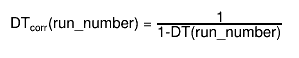

| KVVAMOSWeightFinder(Int_t run_number) |
| KVVAMOSWeightFinder(const KVVAMOSWeightFinder&) |
| virtual | ~KVVAMOSWeightFinder() |
| void | TObject::AbstractMethod(const char* method) const |
| virtual void | TObject::AppendPad(Option_t* option = "") |
| static Bool_t | KVBase::AreEqual(Double_t x, Double_t y, Long64_t maxdif = 1) |
| static void | KVBase::BackupFileWithDate(const Char_t* path) |
| virtual void | TObject::Browse(TBrowser* b) |
| static TClass* | Class() |
| virtual const char* | TObject::ClassName() const |
| virtual void | KVBase::Clear(Option_t* opt = "") |
| virtual TObject* | TNamed::Clone(const char* newname = "") const |
| static void | KVBase::CombineFiles(const Char_t* file1, const Char_t* file2, const Char_t* newfilename, Bool_t keep = kTRUE) |
| virtual Int_t | TNamed::Compare(const TObject* obj) const |
| virtual void | Copy(TObject&) const |
| virtual void | TObject::Delete(Option_t* option = "")MENU |
| virtual Int_t | TObject::DistancetoPrimitive(Int_t px, Int_t py) |
| virtual void | TObject::Draw(Option_t* option = "") |
| virtual void | TObject::DrawClass() constMENU |
| virtual TObject* | TObject::DrawClone(Option_t* option = "") constMENU |
| virtual void | TObject::Dump() constMENU |
| virtual void | TObject::Error(const char* method, const char* msgfmt) const |
| virtual void | TObject::Execute(const char* method, const char* params, Int_t* error = 0) |
| virtual void | TObject::Execute(TMethod* method, TObjArray* params, Int_t* error = 0) |
| virtual void | TObject::ExecuteEvent(Int_t event, Int_t px, Int_t py) |
| virtual void | TObject::Fatal(const char* method, const char* msgfmt) const |
| virtual void | TNamed::FillBuffer(char*& buffer) |
| static Bool_t | KVBase::FindClassSourceFiles(const Char_t* class_name, KVString& imp_file, KVString& dec_file, const Char_t* dir_name = ".") |
| static Bool_t | KVBase::FindExecutable(TString& exec, const Char_t* path = "$(PATH)") |
| static const Char_t* | KVBase::FindFile(const Char_t* search, TString& wfil) |
| virtual TObject* | TObject::FindObject(const char* name) const |
| virtual TObject* | TObject::FindObject(const TObject* obj) const |
| static const Char_t* | KVBase::GetBINDIRFilePath(const Char_t* namefile = "") |
| Float_t | GetBrhoRef(Int_t run_number) |
| static const Char_t* | KVBase::GetDATABASEFilePath() |
| static const Char_t* | KVBase::GetDATADIRFilePath(const Char_t* namefile = "") |
| Float_t | GetDeadTime(Int_t run_number) |
| virtual Option_t* | TObject::GetDrawOption() const |
| static Long_t | TObject::GetDtorOnly() |
| static const Char_t* | KVBase::GetETCDIRFilePath(const Char_t* namefile = "") |
| static const Char_t* | KVBase::GetExampleFilePath(const Char_t* library, const Char_t* namefile) |
| virtual const char* | TObject::GetIconName() const |
| static const Char_t* | KVBase::GetINCDIRFilePath(const Char_t* namefile = "") |
| Float_t | GetInverseWeight(Float_t brho_exp, Float_t thetaI_exp) |
| static const Char_t* | KVBase::GetKVBuildDate() |
| static const Char_t* | KVBase::GetKVBuildDir() |
| static const Char_t* | KVBase::GetKVBuildType() |
| static const Char_t* | KVBase::GetKVBuildUser() |
| static const Char_t* | KVBase::GetKVSourceDir() |
| static const Char_t* | KVBase::GetKVVersion() |
| const Char_t* | KVBase::GetLabel() const |
| static const Char_t* | KVBase::GetLIBDIRFilePath(const Char_t* namefile = "") |
| static const Char_t* | KVBase::GetListOfPlugins(const Char_t* base) |
| virtual const char* | TNamed::GetName() const |
| UInt_t | KVBase::GetNumber() const |
| UInt_t | KVBase::GetNumberOfObjects() const |
| virtual TObject* | KVBase::GetObject() const |
| virtual char* | TObject::GetObjectInfo(Int_t px, Int_t py) const |
| static Bool_t | TObject::GetObjectStat() |
| virtual Option_t* | TObject::GetOption() const |
| static const Char_t* | KVBase::GetPluginURI(const Char_t* base, const Char_t* plugin) |
| Int_t | GetRunPosition(Int_t run_number) |
| Float_t | GetScalerINDRA(Int_t run_number) |
| static void | KVBase::GetTempFileName(TString& base) |
| static const Char_t* | KVBase::GetTEMPLATEDIRFilePath(const Char_t* namefile = "") |
| Float_t | GetThetaVamos(Int_t run_number) |
| virtual const char* | TNamed::GetTitle() const |
| Float_t | GetTransCoef(Float_t VamosAngle_deg, Float_t delta, Float_t thetaI_rad) |
| const Char_t* | KVBase::GetType() const |
| virtual UInt_t | TObject::GetUniqueID() const |
| static const Char_t* | KVBase::GetWORKDIRFilePath(const Char_t* namefile = "") |
| static const Char_t* | KVBase::gitBranch() |
| static const Char_t* | KVBase::gitCommit() |
| virtual Bool_t | TObject::HandleTimer(TTimer* timer) |
| virtual ULong_t | TNamed::Hash() const |
| Bool_t | KVBase::HasLabel() const |
| virtual void | TObject::Info(const char* method, const char* msgfmt) const |
| virtual Bool_t | TObject::InheritsFrom(const char* classname) const |
| virtual Bool_t | TObject::InheritsFrom(const TClass* cl) const |
| void | Init() |
| static void | KVBase::InitEnvironment() |
| virtual void | TObject::Inspect() constMENU |
| void | TObject::InvertBit(UInt_t f) |
| static bool | KVBase::is_gnuinstall() |
| virtual TClass* | IsA() const |
| virtual Bool_t | KVBase::IsCalled(const Char_t* name) const |
| virtual Bool_t | TObject::IsEqual(const TObject* obj) const |
| virtual Bool_t | TObject::IsFolder() const |
| Bool_t | KVBase::IsLabelled(const Char_t* l) const |
| Bool_t | TObject::IsOnHeap() const |
| virtual Bool_t | TNamed::IsSortable() const |
| virtual Bool_t | KVBase::IsType(const Char_t* typ) const |
| Bool_t | TObject::IsZombie() const |
| virtual void | KVBase::List() |
| static TPluginHandler* | KVBase::LoadPlugin(const Char_t* base, const Char_t* uri = "0") |
| virtual void | TNamed::ls(Option_t* option = "") const |
| void | TObject::MayNotUse(const char* method) const |
| virtual Bool_t | TObject::Notify() |
| void | TObject::Obsolete(const char* method, const char* asOfVers, const char* removedFromVers) const |
| static Bool_t | KVBase::OpenContextMenu(const char* method, TObject* obj, const char* alt_method_name = "") |
| static void | KVBase::OpenTempFile(TString& base, ofstream& fp) |
| static void | TObject::operator delete(void* ptr) |
| static void | TObject::operator delete(void* ptr, void* vp) |
| static void | TObject::operator delete[](void* ptr) |
| static void | TObject::operator delete[](void* ptr, void* vp) |
| void* | TObject::operator new(size_t sz) |
| void* | TObject::operator new(size_t sz, void* vp) |
| void* | TObject::operator new[](size_t sz) |
| void* | TObject::operator new[](size_t sz, void* vp) |
| KVVAMOSWeightFinder& | operator=(const KVVAMOSWeightFinder&) |
| virtual void | TObject::Paint(Option_t* option = "") |
| virtual void | TObject::Pop() |
| virtual void | KVBase::Print(Option_t* option = "") const |
| void | PrintRunInfoVector() |
| static void | KVBase::PrintSplashScreen() |
| void | PrintTransCoefInfoVector() |
| void | PrintTransCoefStepVector() |
| virtual Int_t | TObject::Read(const char* name) |
| virtual void | TObject::RecursiveRemove(TObject* obj) |
| void | TObject::ResetBit(UInt_t f) |
| virtual void | TObject::SaveAs(const char* filename = "", Option_t* option = "") constMENU |
| virtual void | TObject::SavePrimitive(ostream& out, Option_t* option = "") |
| static Bool_t | KVBase::SearchAndOpenKVFile(const Char_t* name, ifstream& file, const Char_t* kvsubdir = "", KVLockfile* locks = 0) |
| static Bool_t | KVBase::SearchAndOpenKVFile(const Char_t* name, ofstream& file, const Char_t* kvsubdir = "", KVLockfile* locks = 0) |
| static Bool_t | KVBase::SearchKVFile(const Char_t* name, TString& fullpath, const Char_t* kvsubdir = "") |
| void | TObject::SetBit(UInt_t f) |
| void | TObject::SetBit(UInt_t f, Bool_t set) |
| virtual void | TObject::SetDrawOption(Option_t* option = "")MENU |
| static void | TObject::SetDtorOnly(void* obj) |
| void | KVBase::SetLabel(const Char_t* lab) |
| virtual void | TNamed::SetName(const char* name)MENU |
| virtual void | TNamed::SetNameTitle(const char* name, const char* title) |
| virtual void | KVBase::SetNumber(UInt_t num) |
| static void | TObject::SetObjectStat(Bool_t stat) |
| void | SetRunList(KVNumberList& nl) |
| virtual void | TNamed::SetTitle(const char* title = "")MENU |
| void | KVBase::SetType(const Char_t* str) |
| virtual void | TObject::SetUniqueID(UInt_t uid) |
| void | SetVerbose(Bool_t verbose) |
| virtual void | ShowMembers(TMemberInspector&) |
| virtual Int_t | TNamed::Sizeof() const |
| virtual void | Streamer(TBuffer&) |
| void | StreamerNVirtual(TBuffer& ClassDef_StreamerNVirtual_b) |
| virtual void | TObject::SysError(const char* method, const char* msgfmt) const |
| Bool_t | TObject::TestBit(UInt_t f) const |
| Int_t | TObject::TestBits(UInt_t f) const |
| virtual void | TObject::UseCurrentStyle() |
| virtual void | TObject::Warning(const char* method, const char* msgfmt) const |
| static const Char_t* | KVBase::WorkingDirectory() |
| virtual Int_t | TObject::Write(const char* name = 0, Int_t option = 0, Int_t bufsize = 0) |
| virtual Int_t | TObject::Write(const char* name = 0, Int_t option = 0, Int_t bufsize = 0) const |

{kind=link}
{kind=link}
{kind=link}
{kind=link}
and:  and: run_number = current run number which the identified VAMOS nucleus belongs to delta = brho/brho_ref_i brho = experimental brho in T.m brho_ref_i = reference brho of VAMOS for the run i thetaI = experimental theta angle in rad and in lab. ref. frame in INDRA convention Scaler_i = value of INDRA scalers for the run i theta_V = rotation angle of VAMOS in theta around beam trajectory